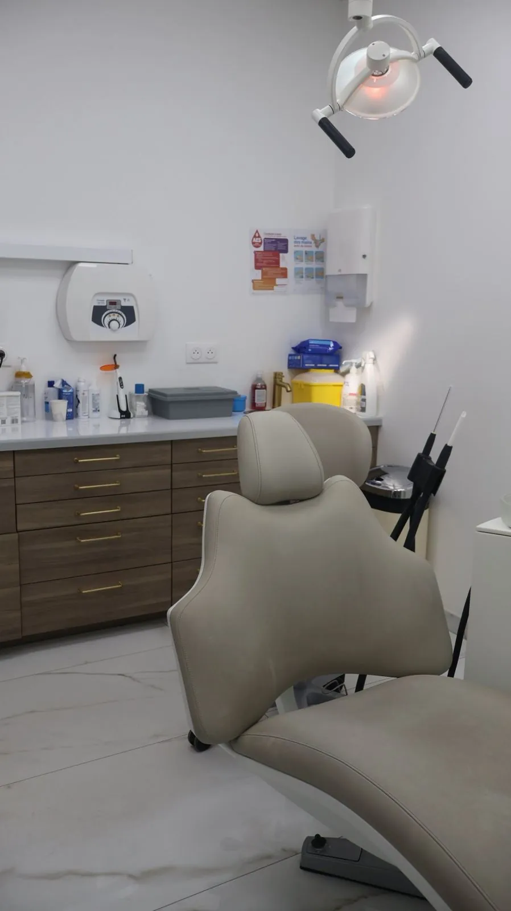
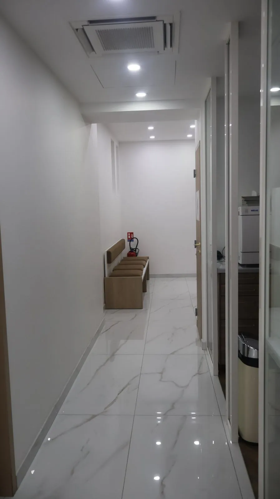
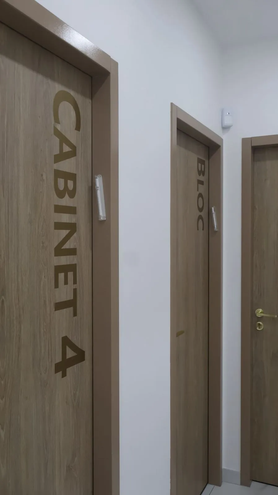

Votre espace dentaire à Malakoff.
Soins, implants, orthodontie, parodontie et urgences, réunis en un seul lieu.
Lundi – vendredi09:00 – 19:00
Urgencesacceptées au centre
24h/24 · 7j/7au téléphone avec Recept AI
Orthodontiesur place, enfants et adultes
Les bons gestes, chaque jour.
- Deux fois par jour, deux minutesMatin et soir. Celui du soir compte le plus.
- La brosseSouple, à petite tête. À changer tous les trois mois.
- Le dentifriceFluoré, 1 450 ppm pour un adulte. Crachez sans rincer.
- Entre les dentsFil dentaire ou brossettes, chaque jour.
- Le contrôle au centreUn bilan par an, avec détartrage si besoin.
Nos soins.
Chirurgiens-dentistes, orthodontiste et parodontie au 112 boulevard Gabriel Péri, à Malakoff (92240), près du métro Malakoff – Plateau de Vanves.
Fiches conseils.
Les bons gestes après vos soins, à lire ou à garder sur votre téléphone.
Faites glisser →


Trois spécialités sur place.
Faites glisser →

112, boulevard Gabriel Péri.
Métro 13 Malakoff – Plateau de Vanves · Bus 126 et 191